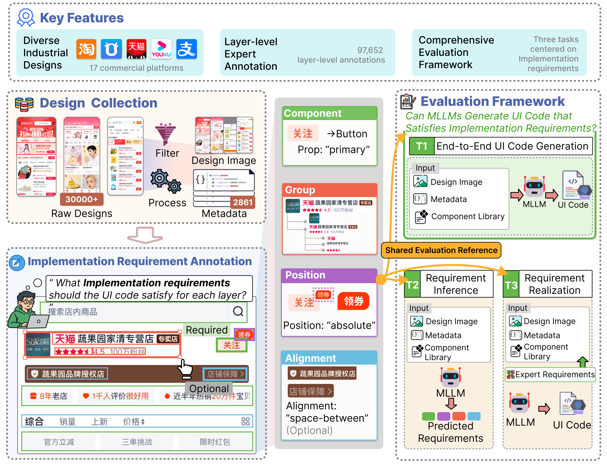

TASK 01
End-to-End Generation
Generate executable UI code from the design image and structured layer representation.
Benchmarking MLLMs for Industrial UI Code Generation Beyond Visual Fidelity
Zhejiang University · Alibaba Group · Taobao (China) Software Co., Ltd.
TaoD2C-Bench evaluates whether multimodal large language models can generate industrial UI code that satisfies implementation requirements—not merely reproduce visual appearance. TaoD2C pairs real production designs with layer-level expert annotations that distinguish required constraints from permitted implementation choices. The benchmark separates end-to-end generation into requirement inference and requirement realization, exposing capability gaps that visual similarity alone cannot reveal.

Generate executable UI code from the design image and structured layer representation.
Infer the implementation requirements encoded implicitly in visual and layer-level evidence.
Produce code that correctly implements explicitly provided requirements under target-library constraints.